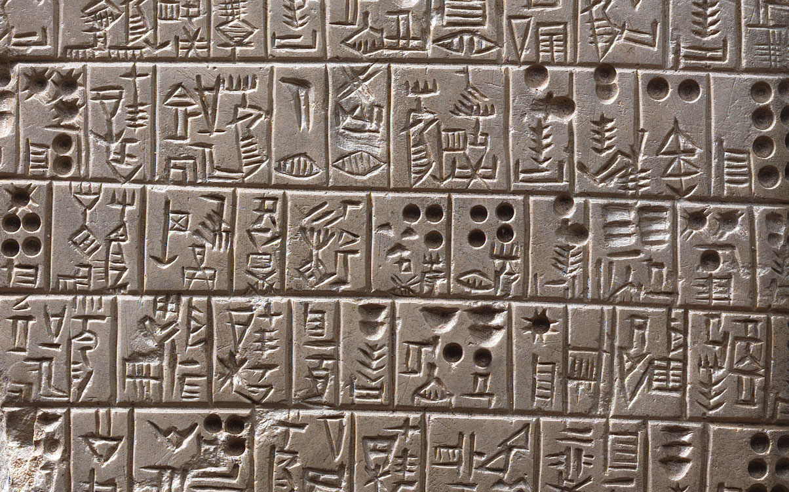
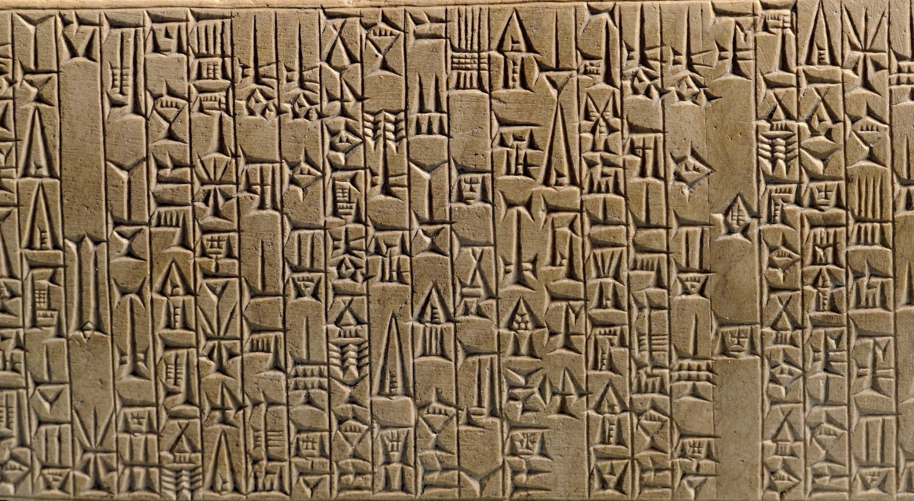
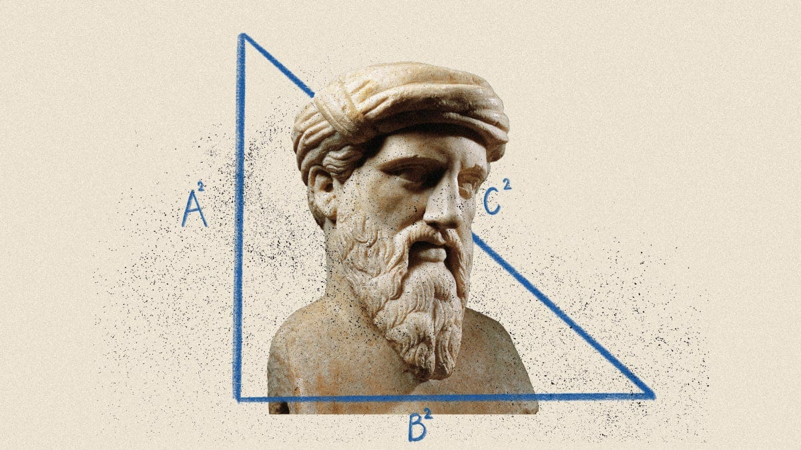

Ancient Civilizations

An ancient civilization refers to a complex and organized society that existed in the distant past, characterized by the development of cities, agriculture, government systems, social hierarchies, religion, trade, and often writing systems. These civilizations emerged independently in various parts of the world, usually near rivers or fertile regions, where they developed advanced cultures, innovations, and technologies that laid the foundation for modern society.
Mesopotamia, known as the "land between rivers," was one of the earliest and most influential ancient civilizations, flourishing around 3500 BCE. It consisted of various city-states such as Sumer, Akkad, Babylon, and Assyria, each contributing to advancements in technology, literature, law, and architecture.
In Mesopotamia, agriculture thrived due to the irrigation systems that channeled water from the Tigris and Euphrates rivers to the fields. This resulted in surplus food production, which supported population growth and the rise of cities. Mesopotamians developed one of the earliest known writing systems, cuneiform, which was used for record-keeping, administration, and literature, including the famous Epic of Gilgamesh, one of the world’s oldest surviving works of literature.
Additionally, Mesopotamians are credited with the creation of the first known code of laws, the Code of Hammurabi (circa 1754 BCE), which laid out a legal framework that governed social relations, business practices, and criminal punishment. The legacy of Mesopotamian law, mathematics, and astronomy still influences modern cultures today.
Learning about ancient civilizations provides insight into the foundations of modern society. Many of the institutions, practices, and cultural norms we observe today have roots in the ancient world. For example, the concept of democracy, which is a cornerstone of modern governance, can be traced back to ancient Greece, while the legal systems we follow today often draw upon the Code of Hammurabi from ancient Mesopotamia. By understanding how early societies formed and evolved, we gain a deeper appreciation for the development of government, law, education, and societal structures. This knowledge allows us to better comprehend how societies adapt and change over time and how certain traditions, technologies, and ideas have been passed down through generations.
Studying ancient civilizations allows us to learn from both their achievements and mistakes. Ancient societies dealt with issues such as governance, environmental management, warfare, and economic challenges, many of which remain relevant today. For instance, the collapse of the Roman Empire provides valuable lessons on overextension, economic inequality, and political corruption. Likewise, the Maya civilization's struggles with deforestation and resource depletion offer important insights into sustainability and environmental management. By understanding how these ancient societies succeeded or failed in addressing their challenges, we can apply these lessons to contemporary problems such as climate change, social inequality, and political instability, helping us make more informed decisions in our own time.
Ancient civilizations were diverse in their cultures, languages, religions, and innovations, and studying them enhances our appreciation of human ingenuity and cultural diversity. Civilizations like ancient Egypt, China, and the Indus Valley developed unique art, architecture, religious beliefs, and scientific advancements that are still admired and studied today. For example, ancient Egyptians’ architectural prowess is exemplified by the pyramids, while ancient Chinese innovations like papermaking and gunpowder changed the world. Learning about these diverse contributions to human progress fosters a sense of global interconnectedness and cultural appreciation, helping us to understand and respect the differences between modern societies and how they emerged from distinct historical contexts.
Ancient civilizations are complex societies that developed distinct cultures, technologies, and governance structures in the early stages of human history. They typically featured advanced urban centers, systems of writing, and significant contributions to culture and technology, such as the Sumerians in Mesopotamia, the Egyptians along the Nile, and the Greeks in the Mediterranean.
The Mesopotamian civilization, often hailed as the "Cradle of Civilization," began to emerge around 3500 BCE in the fertile region between the Tigris and Euphrates rivers, in present-day Iraq. This region, characterized by its rich soil and ample water supply, allowed for the development of agriculture, which was crucial for the growth of urban societies. The early Mesopotamians practiced advanced irrigation techniques to control the river waters and support their crops, which included barley, wheat, and legumes. This agricultural surplus led to the establishment of permanent settlements and eventually, the rise of complex societies. The earliest city-states, such as Uruk and Ur, were notable for their significant architectural and societal advancements. Over time, these city-states developed into a series of powerful kingdoms and empires, such as the Sumerians, Akkadians, Babylonians, and Assyrians, each contributing to the rich tapestry of Mesopotamian history.
Mesopotamian civilization was characterized by a series of city-states, each functioning as an independent entity with its own ruler and administrative structure. Early governance in Mesopotamia was often theocratic, with rulers believed to be divinely appointed. For instance, the Sumerians had kings who were considered intermediaries between the gods and the people. As the civilization evolved, the role of kingship became more pronounced, and rulers like Sargon of Akkad established empires that spanned multiple city-states. The Babylonians, under King Hammurabi, introduced one of the earliest and most comprehensive legal codes, known as the Code of Hammurabi, which aimed to ensure justice and regulate social conduct. This code was inscribed on a stele and publicly displayed, demonstrating an early form of legal transparency. In contrast, the Assyrians were known for their militaristic approach to governance, employing both conquest and diplomacy to maintain control over their vast empire.
Mesopotamia is renowned for its substantial contributions to human culture and technology. One of the most notable achievements was the development of cuneiform, one of the earliest writing systems. Initially used for record-keeping and administrative purposes, cuneiform evolved to include literature and legal documents. The Epic of Gilgamesh, a literary work from Mesopotamia, is one of the earliest known pieces of epic literature and provides valuable insights into the beliefs and values of the time. Mesopotamians made significant advancements in mathematics and astronomy, devising a base-60 number system that influenced modern timekeeping and angular measurement. Their architectural feats include the construction of massive ziggurats, such as the Ziggurat of Ur, which served as temples and administrative centers. The Mesopotamians also developed sophisticated irrigation systems and agricultural techniques that allowed them to sustain large populations and build thriving urban centers.
The economy of Mesopotamia was primarily based on agriculture, supported by the region's advanced irrigation techniques. The surplus produced enabled the growth of trade, both within Mesopotamia and with neighboring regions, such as the Indus Valley and Egypt. This trade facilitated the exchange of goods, such as textiles, metals, and luxury items, contributing to the wealth and power of Mesopotamian city-states. Socially, Mesopotamian society was hierarchical, with a clear class structure. At the top were the ruling class and priests, followed by merchants, artisans, and farmers. Slavery also existed in Mesopotamia, with enslaved individuals often employed in agriculture or as laborers for large construction projects. Religion played a central role in daily life, with numerous deities representing various aspects of nature and society. Temples, managed by priesthoods, were both religious and economic centers, contributing to the centralization of wealth and power.
The decline of Mesopotamian civilization was a gradual process influenced by a combination of factors, including internal strife, environmental changes, and invasions by external forces. The region faced a series of invasions by groups such as the Hittites, Elamites, and eventually the Persians, each of whom contributed to the decline of the major Mesopotamian empires. Environmental factors, including changes in the river's flow and soil salinization due to irrigation practices, also impacted agricultural productivity and contributed to the region's decline. Despite its fall, the legacy of Mesopotamian civilization endures through its contributions to writing, law, mathematics, and architecture. The innovations and cultural achievements of Mesopotamia laid the groundwork for future civilizations and continue to be studied and admired for their impact on human history. More about Mesopotamia
Ancient Persia, located in the region of modern-day Iran, was characterized by its diverse and expansive geography. It encompassed various terrains, including mountain ranges, deserts, and fertile plains. The heartland of Persia lay between the Zagros Mountains to the west and the Iranian Plateau to the east. This strategic location facilitated both defense and trade, providing access to important trade routes like the Silk Road. The Persian Empire’s vast territory spanned from the Mediterranean Sea in the west to the Indus River in the east, incorporating regions such as Mesopotamia, Anatolia, and parts of the Indian subcontinent. The empire's geography played a crucial role in its military strategies and economic prosperity, enabling it to control vital trade routes and manage a diverse range of resources.
Ancient Persia made significant contributions to science and technology, reflecting its advanced understanding of various fields. Persian scholars excelled in astronomy and mathematics, with notable figures such as Omar Khayyam, who contributed to the development of the Persian calendar and made advancements in algebra. Persian engineers and architects were renowned for their innovations, including the construction of complex qanat irrigation systems, which efficiently transported water from underground aquifers to arid regions. Persian medicine also made strides, with scholars like Avicenna (Ibn Sina) producing influential medical texts that synthesized knowledge from various cultures. Additionally, the Persians were skilled in metallurgy, producing high-quality steel and crafting intricate metalwork, which played a crucial role in both their military and daily life.
The political structure of ancient Persia was marked by a series of dynasties and a sophisticated administrative system. The Achaemenid Empire, founded by Cyrus the Great in the 6th century BCE, established a model of governance characterized by a centralized authority and a system of satrapies, or provinces, each governed by a satrap. This system allowed for efficient administration and control over the vast empire. The Achaemenid rulers were known for their policy of tolerance towards the diverse cultures and religions within their empire, which helped to maintain stability and unity. The empire's political influence extended through military conquests, strategic alliances, and diplomacy. Later, the Sassanian Empire, which rose to prominence in the 3rd century CE, continued the tradition of centralized rule and expanded its influence across the Middle East and Central Asia.
The economy of ancient Persia was diverse and highly developed, driven by agriculture, trade, and state-sponsored infrastructure. The Persian Empire's vast territory encompassed a variety of agricultural resources, including grain, fruits, and livestock, which supported a robust agrarian economy. The empire's strategic location facilitated extensive trade networks that connected Persia with regions as far afield as China, India, and the Mediterranean. The Persian Royal Road, an extensive network of roads and relay stations, facilitated the movement of goods and information across the empire. Trade brought wealth and luxury items, including silk and spices, into Persia, contributing to its economic prosperity. Additionally, the Persian government implemented a system of standardized coinage, which streamlined trade and economic transactions across the empire. This economic infrastructure and trade network helped Persia maintain its status as a major power in the ancient world. More about Ancient Persia
Ancient Egypt was located in the northeastern part of Africa, primarily along the banks of the Nile River. The Nile, which flows from south to north into the Mediterranean Sea, was the lifeblood of Egyptian civilization. The fertile delta region of the Nile, known as the Nile Delta, and the narrow strip of fertile land along the river provided a contrast to the surrounding arid desert. This geography allowed ancient Egyptians to develop a highly productive agricultural society. The river’s annual inundation deposited rich silt onto the land, making it highly fertile and ideal for farming. The natural barriers of deserts to the east and west provided protection from invasions, contributing to the stability and continuity of Egyptian civilization over millennia.
Ancient Egypt was renowned for its advancements in various fields of science and technology. Egyptian engineers and architects achieved remarkable feats, including the construction of monumental structures such as the pyramids, temples, and obelisks. The most famous of these are the Great Pyramids of Giza, built as tombs for pharaohs. The Egyptians developed advanced techniques in mummification, preserving bodies for the afterlife. They also made significant contributions to medicine, with practices documented in texts like the Ebers Papyrus, which included treatments and surgical techniques. In mathematics, the Egyptians used a system of arithmetic based on fractions and had a profound understanding of geometry, which was essential for their architectural endeavors. Additionally, Egyptian astronomy was highly developed, with their observations influencing the creation of an accurate calendar that divided the year into 12 months with 30 days each, supplemented by an additional 5 days.
The political structure of ancient Egypt was characterized by a centralized, theocratic system under the rule of the pharaohs. The pharaoh was considered both a divine ruler and a political leader, embodying the gods on earth and maintaining order and harmony in the cosmos. The government was highly organized, with a bureaucracy that managed various aspects of administration, including tax collection, legal matters, and state projects. Local governance was handled by nomarchs (provincial governors) who oversaw different regions of Egypt. The political stability of ancient Egypt was reinforced by a combination of strong leadership, religious authority, and a well-organized administrative system. Major achievements under different dynasties, such as the Old Kingdom, Middle Kingdom, and New Kingdom, reflected the pharaohs' ability to unite and control the vast resources of the empire, from the Nile Delta to Nubia.
The economy of ancient Egypt was primarily based on agriculture, which was made highly productive by the annual flooding of the Nile River. This natural irrigation system supported the cultivation of crops such as wheat, barley, and flax, which were essential for food and industry. The surplus agricultural production allowed for the development of complex trade networks, both within Egypt and with neighboring regions. Egypt engaged in trade with regions such as Nubia, the Levant, and the eastern Mediterranean, exchanging goods like grain, papyrus, and linen for raw materials and luxury items. The economic system was supported by a centralized state that controlled land ownership and agricultural output, and the collection of taxes in the form of goods and labor. Additionally, the construction of monumental architecture, such as temples and pyramids, was a major economic activity that involved vast amounts of labor and resources, reflecting both the state’s economic power and religious devotion. More about Ancient Egypt
Ancient China was situated in East Asia, encompassing a diverse range of geographical features that greatly influenced its development. The core of ancient Chinese civilization was along the fertile plains of the Yellow River (Huang He) and the Yangtze River (Chang Jiang). The Yellow River basin, known as the cradle of Chinese civilization, provided fertile soil due to its periodic flooding, which was crucial for agriculture. To the west, the Tibetan Plateau and the Gobi Desert acted as natural barriers, while the north was bordered by the harsh steppes. To the east, the coastline along the Yellow Sea and the East China Sea provided access to maritime trade. These geographic features contributed to the development of distinct regional cultures within China and influenced patterns of settlement, trade, and defense.
Ancient China was a hub of scientific and technological innovation. Among its notable contributions was the development of paper, which was invented during the Han Dynasty by Cai Lun around 105 CE. This innovation revolutionized record-keeping and literature. Chinese advancements in astronomy and meteorology were also significant, with early records of solar and lunar eclipses and the creation of calendars based on celestial observations. The invention of the compass during the Han Dynasty facilitated navigation and exploration. Additionally, ancient Chinese technology included the use of gunpowder, which was first developed as an alchemical product and later used in warfare. The practice of acupuncture and the development of traditional Chinese medicine, including herbal remedies, showcased the depth of Chinese knowledge in health and wellness.
The political landscape of ancient China was characterized by a series of dynasties, each with its own system of governance. The early dynastic rule began with the Xia Dynasty, followed by the Shang Dynasty and the Zhou Dynasty, which introduced the concept of the Mandate of Heaven, legitimizing the ruler’s authority as divinely ordained. The Zhou Dynasty's decentralized feudal system gradually shifted towards a more centralized bureaucracy under the Qin Dynasty. The Qin Dynasty, founded by Qin Shi Huang, established a unified Chinese state and implemented significant reforms, including standardized weights and measures and a unified legal code. The Han Dynasty further developed a bureaucratic system with a civil service based on Confucian principles. The political structure in ancient China was marked by a strong central authority, but it was also influenced by regional rulers and local governance throughout its history.
The economy of ancient China was primarily agrarian, with rice and wheat being the staple crops. The fertile river valleys supported extensive agriculture, which was crucial for sustaining the large population. The state played a significant role in managing agricultural production, including land distribution and irrigation systems. Trade also played a crucial role, with the establishment of the Silk Road during the Han Dynasty facilitating commerce between China and regions as far afield as the Roman Empire. The Silk Road enabled the exchange of goods such as silk, tea, and ceramics, contributing to economic prosperity. Additionally, ancient China was known for its development of early forms of currency, including metal coins and later, paper money during the Tang and Song Dynasties. The economy was supported by a complex system of taxation and state control over key industries such as salt and iron. More about Ancient China
Ancient India was located in South Asia, characterized by a diverse range of geographical features that shaped its civilization. The subcontinent is bounded by the Himalayas to the north, which provided a natural barrier against invasions and contributed to the region’s distinct climatic patterns. The Indus River Valley, in the northwest, was the site of one of the earliest urban civilizations, the Indus Valley Civilization, which flourished due to the fertile lands and access to water for agriculture. The Ganges River, flowing from the Himalayas to the Bay of Bengal, was another crucial area for early civilizations, providing rich soil and a network for trade and transportation. The Deccan Plateau, located in the central part of the subcontinent, is characterized by its semi-arid climate and rugged terrain. To the south, the coastline along the Arabian Sea and the Bay of Bengal facilitated maritime trade with other parts of Asia and Africa.
Ancient India made significant contributions to science and technology, particularly in mathematics, astronomy, and metallurgy. The concept of zero and the decimal system, which originated in ancient India, revolutionized mathematics and influenced subsequent developments in the field. Ancient Indian astronomers, such as Aryabhata and Brahmagupta, made early advancements in understanding planetary motion and eclipses. In medicine, the Ayurvedic system, detailed in texts like the Sushruta Samhita and Charaka Samhita, included surgical techniques and herbal treatments. Metallurgical achievements include the creation of the Iron Pillar of Delhi, an iron column that has resisted corrosion for over a millennium, demonstrating advanced knowledge of metallurgy and alloying techniques. Indian architecture also saw innovations such as the construction of sophisticated water management systems and urban planning in cities like Mohenjo-Daro and Harappa.
The political landscape of ancient India was marked by a series of powerful kingdoms and empires. The early political organization included small kingdoms and republics, known as Mahajanapadas, which were often governed by monarchs or assemblies. The Maurya Empire, founded by Chandragupta Maurya in the 4th century BCE, established a centralized state with a well-organized bureaucracy and an extensive administrative network. His grandson, Ashoka the Great, is renowned for his promotion of Buddhism and his efforts to unify and govern his diverse empire through ethical governance and diplomacy. The Gupta Empire, often referred to as the “Golden Age” of ancient India, saw advancements in science, art, and culture under rulers like Chandragupta II and Samudragupta. The political structure in ancient India was characterized by both centralized empires and regional kingdoms, each contributing to the rich tapestry of Indian history.
The economy of ancient India was predominantly agrarian, supported by the fertile plains of the Indus and Ganges rivers. Agriculture was the mainstay, with crops such as rice, wheat, and barley being cultivated. The Indus Valley Civilization’s sophisticated urban planning and trade networks highlight the importance of agriculture and commerce in the early economy. Trade played a significant role, with the establishment of trade routes such as the Silk Road connecting India with Central Asia, the Middle East, and beyond. India was known for its production of valuable commodities like spices, textiles, and gemstones, which were traded extensively. The concept of currency evolved over time, with the use of metal coins becoming prominent during the Maurya and Gupta periods. Additionally, the ancient Indian economy saw advancements in banking and credit systems, with the use of promissory notes and ledgers for managing trade and finance. More about Ancient India
Ancient Greece was located in southeastern Europe, characterized by a rugged and mountainous terrain that greatly influenced its political and cultural development. The Greek mainland is divided into a series of peninsulas and islands, with mountains dominating the landscape. This rugged geography led to the development of isolated city-states, or poleis, such as Athens, Sparta, and Corinth, each with its own government and way of life. The Mediterranean Sea to the south and the Aegean Sea to the east provided crucial maritime routes that facilitated trade and cultural exchange with other civilizations. The climate of ancient Greece, with its hot, dry summers and mild, wet winters, was conducive to agriculture, particularly the cultivation of olives and grapes. The geographic isolation of these city-states also fostered a sense of regional identity and competition among them.
Ancient Greece was a center of scientific and philosophical inquiry, contributing significantly to Western knowledge in various fields. Greek mathematicians such as Euclid and Pythagoras made foundational contributions to geometry and number theory. The Greeks also made strides in astronomy and physics, with figures like Aristarchus proposing early heliocentric theories and Archimedes advancing the understanding of levers and buoyancy. In medicine, Hippocrates is often referred to as the "Father of Medicine" for his contributions to the field and his establishment of the Hippocratic Oath, which emphasized ethical practice. Greek engineering achievements include the construction of advanced water systems, such as aqueducts and the Antikythera mechanism, an ancient analog computer used to predict astronomical positions. Greek architectural innovations, exemplified by structures like the Parthenon, showcased advanced knowledge in mathematics and engineering.
The political landscape of ancient Greece was characterized by the development of various forms of government across its city-states. The most famous of these was democracy, which originated in Athens around the 5th century BCE. Athenian democracy was notable for its direct involvement of citizens in decision-making processes and its establishment of institutions like the Assembly and the Council of Five Hundred. In contrast, Sparta was known for its militaristic and oligarchic system, where power was concentrated in the hands of a few. The political structure of ancient Greece was marked by frequent conflicts and alliances between city-states, as seen in the Peloponnesian War between Athens and Sparta. Despite their political differences, Greek city-states shared a common culture and language, which contributed to a unified Greek identity and facilitated cultural and intellectual exchange.
The economy of ancient Greece was primarily based on agriculture, with the cultivation of olives, grapes, and grains being central to the economy. The Greeks also engaged in trade across the Mediterranean and Black Seas, exporting goods such as olive oil, wine, and pottery. The city-state of Athens, in particular, became a major commercial hub, with its port, Piraeus, serving as a key center for maritime trade. The economy was supported by a complex system of coinage, with Greek coins such as the drachma becoming widely used in trade and commerce. Additionally, the Greeks practiced various forms of economic management and banking, including the use of credit and loans. The wealth generated from trade and agriculture contributed to the development of Greek culture, including the arts, philosophy, and architecture. More about Ancient Greece
Ancient Rome was located in the central region of the Italian Peninsula, a strategically advantageous position that facilitated its expansion and dominance. The city of Rome was originally built on the seven hills overlooking the Tiber River, which provided natural defenses and access to trade routes. The surrounding Italian Peninsula is characterized by its diverse geography, including fertile plains like the Po Valley and rugged mountainous regions such as the Apennines. This varied landscape contributed to the development of Roman agriculture and infrastructure. Rome’s proximity to the Mediterranean Sea was crucial for trade and military campaigns, allowing the Roman Empire to control maritime routes and expand its influence across Europe, North Africa, and the Middle East. The Roman Empire’s extensive road network, including famous routes like the Appian Way, facilitated the movement of troops, goods, and communication throughout its vast territories.
Ancient Rome was known for its advancements in engineering, architecture, and public infrastructure. The Romans developed sophisticated engineering techniques that enabled the construction of enduring structures such as aqueducts, bridges, and roads. The Pont du Gard in France and the Aqueduct of Segovia in Spain are examples of Roman engineering prowess in water management. Roman architecture saw innovations like the use of concrete, which allowed for the construction of large-scale buildings such as the Pantheon and the Colosseum. In medicine, Roman scholars like Galen contributed to the understanding of anatomy and medical practices. Roman innovations also included advances in urban planning, with the development of public baths, sewage systems, and forums that enhanced the quality of urban life. Roman technological advancements laid the groundwork for future developments in engineering and construction.
The political history of ancient Rome is marked by significant transformations, from a monarchy to a republic and finally an empire. Rome was initially ruled by a series of kings, but in 509 BCE, the Roman Republic was established, characterized by a complex system of checks and balances with elected magistrates, a Senate, and popular assemblies. The Republic was marked by internal conflicts, such as the struggle between the patricians and plebeians, and external conflicts, including the Punic Wars against Carthage. In 27 BCE, the Roman Empire was established under Augustus Caesar, marking the transition from republican governance to imperial rule. The Empire was characterized by centralized power and a bureaucratic administration, with emperors such as Nero, Trajan, and Hadrian shaping its history. The Roman Empire's political structure allowed for extensive control over its territories, though it also faced challenges such as internal strife, economic difficulties, and eventual decline.
The economy of ancient Rome was diverse and complex, relying on agriculture, trade, and taxation. Agriculture was the foundation of the Roman economy, with large estates, known as latifundia, producing grains, olives, and wine. Roman agriculture benefited from innovations such as the development of advanced irrigation techniques and crop rotation. Trade was crucial to the Roman economy, with extensive networks connecting the Empire to regions across Europe, North Africa, and the Middle East. Roman commerce included the exchange of goods such as grain, luxury items, and manufactured products. The use of a standardized currency, including coins like the denarius, facilitated trade and economic transactions. The Roman Empire also employed a system of taxation to fund public projects and maintain its military. Economic activities were regulated by the state, and the wealth generated through trade and agriculture contributed to Rome's grandeur and influence. More about Ancient Rome
The development of writing systems was one of the most profound advancements in ancient civilizations, as it enabled the recording and transmission of knowledge across generations. The earliest forms of writing emerged in ancient Mesopotamia with cuneiform script around 3200 BCE. This system of wedge-shaped marks on clay tablets allowed for the documentation of administrative records, legal codes, and literature. Similarly, ancient Egypt developed hieroglyphics, which were used for religious texts and monumental inscriptions. The Phoenicians contributed the alphabetic script, a precursor to many modern alphabets, which simplified writing and facilitated communication across diverse cultures. The invention of writing systems revolutionized human civilization by preserving historical records, facilitating complex administration, and promoting the exchange of ideas, which laid the foundation for future intellectual and cultural development.
Cr.: Penn Museum
The creation of legal codes was a significant advancement in ancient civilizations, establishing a framework for justice and societal order. One of the earliest and most influential legal codes was the Code of Hammurabi, developed by the Babylonian king Hammurabi around 1754 BCE. This comprehensive set of laws was inscribed on a stele and covered various aspects of daily life, including property rights, family law, and trade regulations. The code introduced the principle of retributive justice ("an eye for an eye") and set precedents for legal procedures and penalties. Similarly, ancient Rome's Twelve Tables and Justinian's Corpus Juris Civilis played crucial roles in shaping legal systems and principles. These legal codes contributed to the development of structured societies, ensured accountability, and influenced the legal traditions of many subsequent civilizations.
Cr.: Brewminate
Architectural and engineering innovations in ancient civilizations had a lasting impact on infrastructure, urban planning, and construction techniques. The ancient Egyptians' mastery of stone masonry led to the construction of monumental structures such as the Great Pyramids of Giza and the Sphinx, which remain iconic symbols of architectural achievement. In ancient Rome, engineering innovations such as the development of concrete and the construction of aqueducts, roads, and monumental buildings like the Pantheon and the Colosseum demonstrated advanced techniques in construction and urban planning. The Roman aqueducts, for example, revolutionized water management and urban sanitation. These innovations not only facilitated the growth and organization of ancient cities but also provided enduring examples of engineering excellence that continue to influence modern architecture and infrastructure.

Cr.: Britannica
Advancements in mathematics and astronomy in ancient civilizations laid the groundwork for scientific inquiry and understanding of the natural world. In ancient Greece, mathematicians such as Pythagoras, Euclid, and Archimedes made foundational contributions to geometry, number theory, and mathematical principles. The Greeks' work in mathematics influenced later developments in science and engineering. Similarly, ancient Babylonian and Egyptian astronomers made significant strides in understanding celestial phenomena. The Babylonians developed early forms of astronomical records and predictions, while ancient Egyptians used astronomical observations for agricultural planning and religious purposes. The Greeks' contributions to astronomy included the development of models to explain planetary movements. These advancements in mathematics and astronomy provided essential tools for scientific progress and influenced subsequent developments in various fields of study.
Cr.: Medium page of Pelin Dilara Çolak
The development of philosophy and political thought in ancient civilizations had a profound impact on intellectual and political traditions. In ancient Greece, philosophers such as Socrates, Plato, and Aristotle explored fundamental questions about existence, ethics, and governance. Socrates' method of questioning and dialogue, Plato's ideas about ideal forms and the nature of justice, and Aristotle's works on politics, ethics, and logic established foundational principles of Western philosophy. Additionally, political thought in ancient Rome, particularly during the Republic, introduced concepts such as checks and balances, representative governance, and legal equality. Roman political philosophy, influenced by Greek ideas, contributed to the development of modern democratic systems and legal principles. These contributions to philosophy and political thought provided essential frameworks for understanding human nature, ethics, and governance, influencing subsequent philosophical and political developments throughout history.

Cr.: Philosophy Break
One of the most crucial lessons from ancient civilizations is the importance of written communication for the preservation and dissemination of knowledge. The development of writing systems in ancient Mesopotamia with cuneiform, in Egypt with hieroglyphics, and in the Phoenician alphabet demonstrates how writing enabled civilizations to record laws, trade transactions, historical events, and cultural narratives. For instance, the Code of Hammurabi, one of the earliest decipherable records of written law, provided a framework for legal justice that has influenced countless legal systems throughout history. The ability to document information allowed ancient civilizations to build complex societies, transfer knowledge across generations, and maintain continuity in governance and culture. This lesson underscores the vital role that written communication plays in advancing human civilization and ensuring the preservation of knowledge.
Ancient civilizations teach the critical value of establishing comprehensive legal frameworks for maintaining social order and justice. The Code of Hammurabi, the Twelve Tables of Rome, and the Justinian Code from the Byzantine Empire are exemplary in demonstrating how structured legal codes can regulate societal behavior, protect rights, and resolve conflicts. For example, the Code of Hammurabi, inscribed on a stele, provided a detailed set of laws covering various aspects of daily life, including property, family relations, and commerce. This code introduced the concept of legal predictability and fairness, laying the groundwork for future legal systems. The establishment of legal frameworks in ancient societies highlights the necessity of laws in promoting justice, stability, and societal harmony.
Ancient civilizations provide valuable lessons in engineering and architecture, showcasing the importance of innovation for infrastructure and urban development. The construction of monumental structures such as the Great Pyramids of Egypt, the Roman aqueducts, and the Colosseum illustrates how engineering prowess can create lasting legacies and improve quality of life. The Romans' use of concrete and their development of extensive road networks facilitated communication and trade across their empire, while the Egyptians' mastery of stone masonry led to some of the most enduring architectural wonders. These advancements underscore the impact of engineering and architectural innovation on urban planning, infrastructure, and the advancement of human civilization. They also demonstrate how such innovations can address practical needs and leave a lasting cultural and historical legacy.
The philosophical inquiries of ancient civilizations, particularly those of Greece, offer enduring lessons on the nature of knowledge, ethics, and governance. Philosophers such as Socrates, Plato, and Aristotle explored fundamental questions about human existence, morality, and political organization. Socrates’ method of dialectical questioning encouraged critical thinking and self-reflection, while Plato's works, such as "The Republic," proposed ideas about justice and ideal governance. Aristotle’s contributions to logic, ethics, and political theory provided a foundation for Western thought. These philosophical traditions highlight the value of questioning assumptions, seeking knowledge, and contemplating the nature of justice and governance. The lessons learned from ancient philosophical inquiry continue to influence modern thought and contribute to the ongoing quest for understanding and improving human society.
Ancient civilizations illustrate the importance of trade and economic integration in fostering prosperity and cultural exchange. The Silk Road, which connected China with the Mediterranean, and the maritime trade routes of the Phoenicians and Egyptians, facilitated the exchange of goods, ideas, and technologies across vast distances. For example, the trade networks of ancient Rome and the Han Dynasty not only boosted economic prosperity but also led to significant cultural and technological exchanges, such as the spread of papermaking and the adoption of new artistic styles. These trade interactions demonstrate how economic integration can promote mutual understanding, drive technological advancement, and enhance the overall well-being of societies. The lessons from ancient trade practices emphasize the benefits of economic cooperation and cultural exchange in building interconnected and thriving civilizations.
Ancient civilizations developed various forms of governance that laid the groundwork for modern political systems. For instance, Ancient Greece is renowned for its invention of democracy, particularly in Athens, where citizens could participate directly in decision-making processes. This early form of direct democracy allowed citizens to vote on laws and policies affecting their community, influencing modern democratic practices. Conversely, Ancient Rome developed the concept of a republic, where elected representatives governed on behalf of the people, which later influenced the structure of many modern republics. Additionally, Ancient Egypt and Mesopotamia featured centralized monarchies where pharaohs and kings wielded absolute power. These diverse forms of governance in ancient civilizations illustrate the evolution of political systems and their impact on contemporary political structures.
Ancient civilizations made remarkable advancements in engineering and architecture, some of which continue to captivate modern audiences. The construction of the Great Wall of China, spanning thousands of miles, demonstrates the ancient Chinese mastery of large-scale construction and military strategy. Similarly, the Egyptians' architectural prowess is evident in the construction of the pyramids, such as the Great Pyramid of Giza, which remains one of the Seven Wonders of the Ancient World. The Romans' innovative use of concrete and their development of the aqueduct system revolutionized infrastructure, enabling cities to thrive with advanced water management and urban planning. These engineering feats highlight the ingenuity and technical skills of ancient civilizations, which have influenced modern engineering practices and architectural designs..
Ancient civilizations made significant contributions to science and mathematics that laid the foundation for future scientific advancements. The Babylonians, for example, developed an early form of algebra and made important astronomical observations, including the creation of the Babylonian star catalog. The Greeks contributed to mathematics through the work of Pythagoras, Euclid, and Archimedes, who developed fundamental principles in geometry and calculus. In ancient India, scholars like Aryabhata and Brahmagupta made groundbreaking contributions to algebra and trigonometry. These early advancements in science and mathematics provided the basis for later developments in these fields, illustrating how ancient civilizations laid the groundwork for modern scientific inquiry and technological progress.
Ancient civilizations produced rich cultural and artistic legacies that continue to influence modern culture and aesthetics. Ancient Greece, known for its contributions to art and literature, produced enduring works such as Homer's "Iliad" and "Odyssey," which have shaped Western literary traditions. Greek sculpture, exemplified by works like the Parthenon sculptures, set high standards for artistic expression and representation. The art of Ancient Egypt, with its distinctive style of tomb paintings and sculptures, offers valuable insights into religious beliefs and societal norms of the time. Similarly, the intricate designs of Indian temples and the sophisticated pottery of the Minoans reflect the cultural and artistic achievements of these civilizations. These cultural and artistic legacies highlight the enduring impact of ancient civilizations on global cultural heritage and artistic practices.
Ancient civilizations established extensive trade networks and economic systems that facilitated cultural and material exchange across vast regions. The Silk Road, which connected China with the Mediterranean, was a major trade route that allowed for the exchange of goods such as silk, spices, and precious metals, as well as cultural and technological innovations. The maritime trade routes of the Phoenicians and Egyptians linked different parts of the ancient world, promoting economic integration and cultural exchange. The Roman Empire's network of roads and trade routes facilitated the movement of goods and people across Europe, the Middle East, and North Africa. These trade networks and economic systems demonstrate the interconnectedness of ancient civilizations and their influence on global economic and cultural development.
1. How did the Hubble Deep Field observation in 1995 change our understanding of the universe?
2. Describe one contribution of ancient Babylonians to early astronomy.
3. Explain the impact of the Islamic Golden Age on the development of astronomy during the medieval period.
4. How did the heliocentric model proposed by Copernicus revolutionize our understanding of the solar system?
5. What are some of the key research areas in contemporary astronomy, and why are they significant?